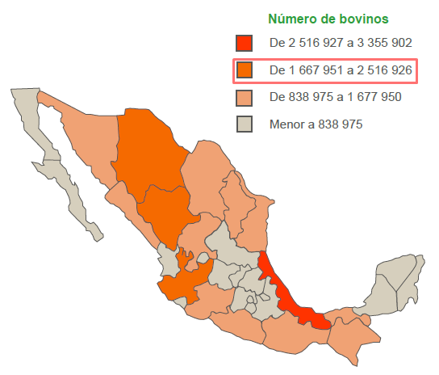
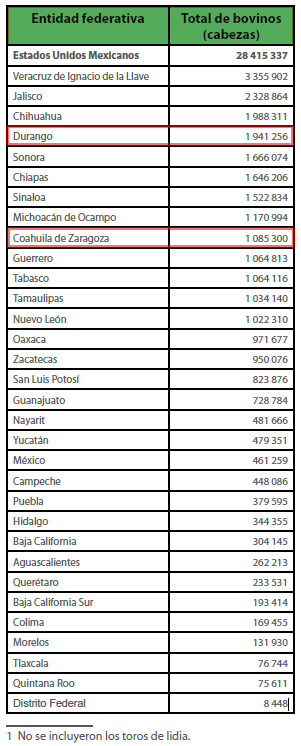
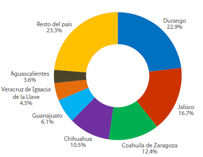
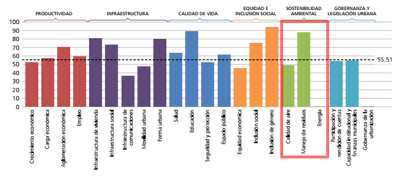

Hoy en día los avances tecnológicos se encuentran a la vanguardia en muchos aspectos, los cuales intervienen en la vida cotidiana, especialmente en el medio ambiente con beneficios notables en distintas áreas, sobre todo en la agricultura. Alrededor del mundo se emplea el uso de avances biotecnológicos que pretenden aprovechar al máximo el potencial de todos los recursos de la tierra y los animales.
¿Por qué no aprovechar el uso de los biodigestores en nuestra región? Actualmente es muy poca o casi nula la difusión sobre esta alternativa, que sin duda beneficiaría de forma positiva el trabajo de todos los grandes y pequeños empresarios del rubro agropecuario en la región, por no mencionar los beneficios al medio ambiente de esta nueva tendencia para la Comarca Lagunera.
El Biogás ha despertado un gran interés en los últimos años, por ser una de las tecnologías de más fácil implementación, sobre todo en sectores rurales. Su potencial de desarrollo, no sólo considerando la producción de biogás, sino como ayuda a la obtención de bio fertilizante y tratamiento de problemas sanitarios, en algunos casos, hacen que su réplica y difusión en los sectores con abundancia de materia orgánica de desecho. sea atractiva.
El biogás, producto de la descomposición de materia orgánica, puede ser usado para cocción de alimentos, calefacción y las múltiples aplicaciones que tiene los combustibles convencionales. Los sistemas biodigestores junto a la producción de energía eléctrica a base de biogás, son tecnologías aún prematuras a nivel nacional. Con la presencia de una industria ganadera en la región Lagunera se identifica el potencial del biogás como una alternativa sustentable para generar energía minimizando el gasto de recursos.
El Instituto Nacional de Estadística y Geografía (INEGI) presenta estadísticas de la ganadería en México como parte de los resultados de la Encuesta Nacional Agropecuaria 2014 (ENA) 2014. En este documento se describe la producción de bovinos y las características con las que se desarrolla esta actividad primaria.
En la ENA se estimó que existe un total de 28.4 millones de cabezas a nivel nacional. Los principales estados productores son: Veracruz de Ignacio de la Llave con 3.4 millones, seguido por Jalisco con 2.3 millones y Chihuahua con 2.0 millones.
En esta actividad, los estados con mayor número de cabezas son: Durango (22.9%), seguido de Jalisco (16.7%), Coahuila de Zaragoza (12.4%), Chihuahua (10.5%) y Guanajuato (6.1%), así como Veracruz de Ignacio de la Llave y Aguascalientes (4.5 y 3.6%, respectivamente).
Para darnos una idea en Coahuila de Zaragoza cuenta con 1,085,300 cabezas de ganado que diariamente generan 38,760 toneladas diarias de estiércol.
La Comarca Lagunera es de las principales regiones con mayores cabezas de ganado bovino, las empresas ganaderas pueden aprovechar todo el estiércol generado a diario por el ganado para producir energías alternativas, a través de la obtención de gas metano (CH4) a partir de heces de animales y utilizarlas en generación de combustión interna; es decir, hacer funcionar la granja sin recurrir a la energía convencional.
Como resultado de este proceso también se generan residuos con un alto grado de concentración de nutrientes y materia orgánica ideales para regenerar suelos, debido a que el tratamiento anaeróbico convierte los desechos en minerales, también al final del proceso el biodigestor genera un líquido que se puede utilizar como fertilizante.
Torreón, con escasa producción de energía renovable
Las ciudades ambientalmente sostenibles son capaces de mantener un sano equilibrio entre el crecimiento económico y el ambiente. Son más compactas y energéticamente eficientes, limpias, menos contaminadas, más accesibles y ofrecen mejores opciones de transporte.
De acuerdo con el Índice de Prosperidad Urbana de ONU Habitat, dado a conocer en Torreón este año, el Municipio dentro de la categoría de Sostenibilidad Ambiental obtuvo una baja calificación en el área de energía renovable.
Calidad de aire, manejo de residuos y energía fueron las variables tomadas en cuenta en la medición de este año, en donde energía renovable obtuvo una calificación de un 0%. Ésta mide la proporción de la electricidad producida mediante energía geotérmica, solar fotovoltaica, solar térmica, marea, viento, residuos industriales o municipales, biocombustibles primarios sólidos, biogases, biogasolina, biodiesel, otros biocombustibles líquidos, biocombustibles primarios y residuos no especificados, y carbón vegetal, como parte del total de la producción eléctrica generada. La sub dimensión de energía se califica como un factor extremadamente débil.
Número de bovinos en México


Estados con mayor número de cabezas de ganado

Resultados por subdimensión CPI Básico

Fuente: ONU-Habitat: Índice Básico de las Ciudades Prósperas, Torreón 2016
Esto fue publicado en Milenio Laguna
Milenio - El potencial del biogás como fuente de energía alternativa